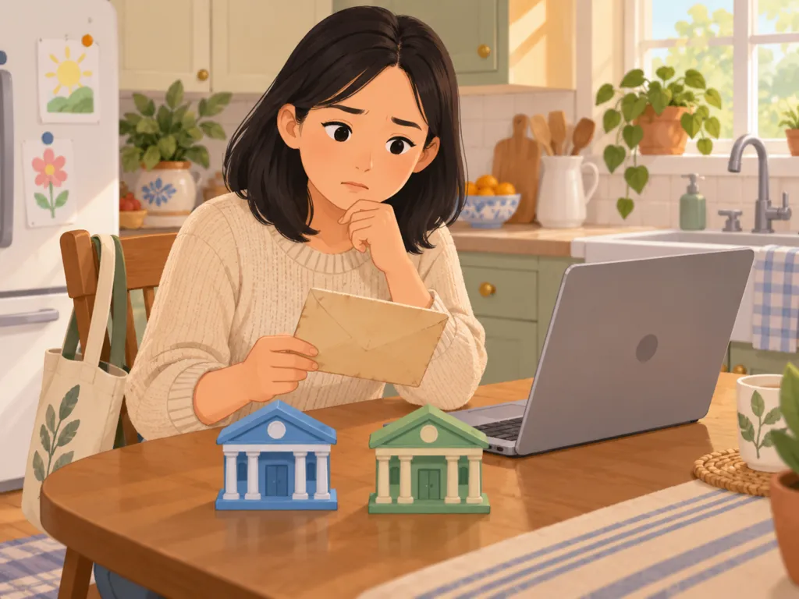
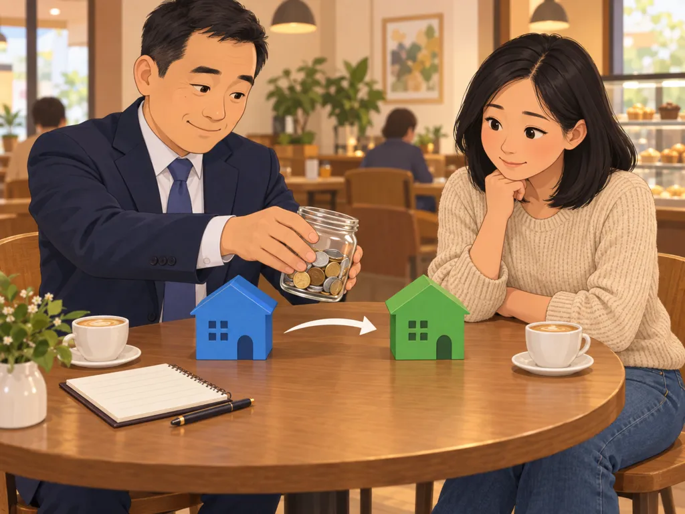
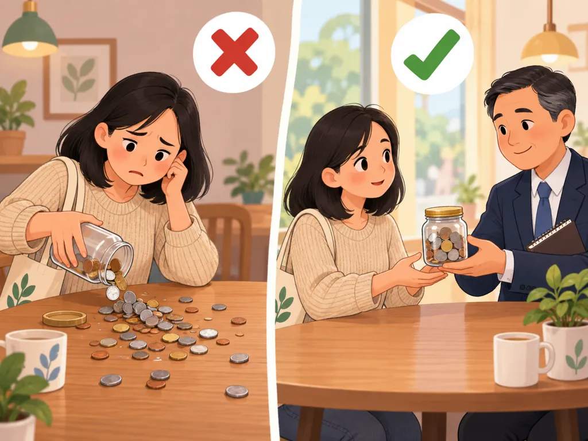
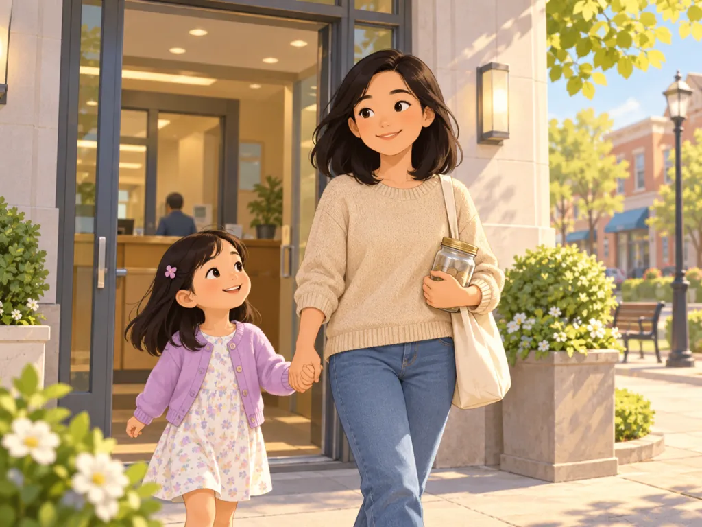
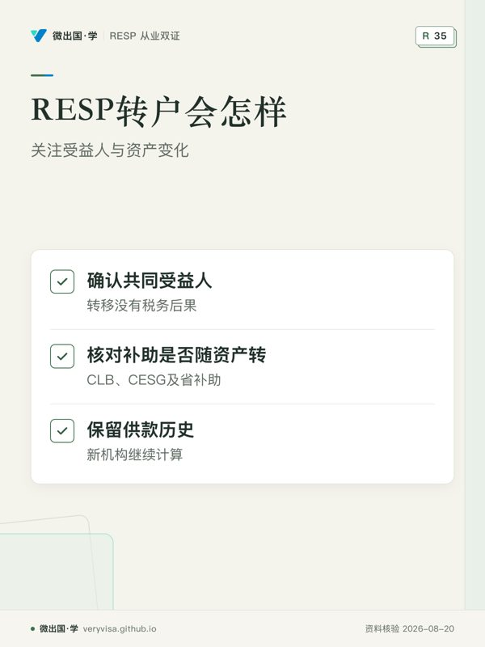
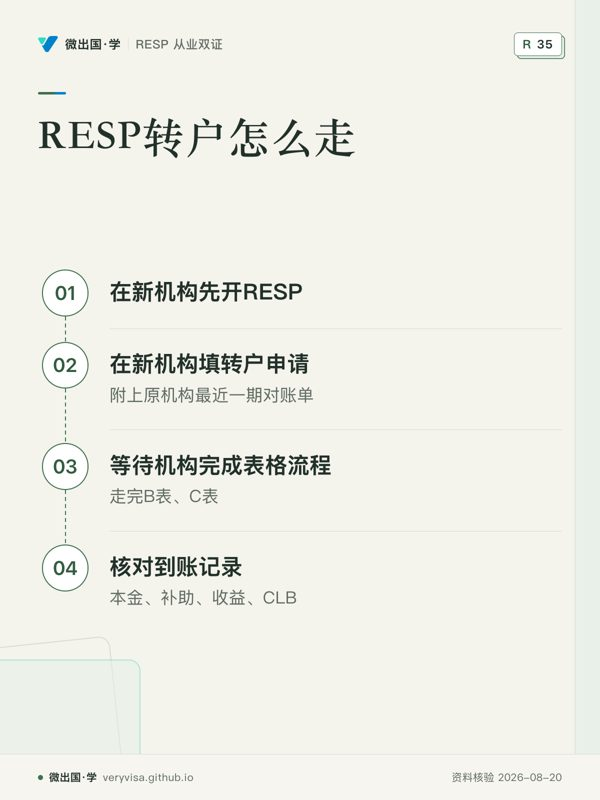

想换一家机构，可以吗？我之前拿的补助会不会没了？转户不是重新开始。补助记录跟着账户走，由机构之间衔接。

像把一个罐子整个搬到另一个架子上，不洒。走的是机构之间的直接转移，具体表格与流程以新机构和官方页面为准。

最怕自己取出来再存回去。自己取出再存，可能触发补助退还等后果。直接转移则不需要这样做。
那我只要找新机构办？一般由新机构发起转移手续，你需要准备的资料与表格，以新机构为准。

画面由 AI 绘制、无文字；对白与说明是我们按官方规则写的，以正文与官方页面为准。
韩太太的 RESP 在一家大银行开了八年，里面买的是银行自家的教育基金，年费率接近 2%。她算了一下，同样的钱放进网上券商买指数基金，每年能省几百块。可她又听说「RESP 转户会丢补助」「要交税」，拖了两年没动。
这两个担心都不成立。同一个孩子的 RESP 从一家机构转到另一家，没有税务后果，补助也跟着转过去。真正要注意的是三件事：手续由谁发起、转户期间钱在哪里、原机构会扣多少费用。
规则：同一受益人转户没有税务后果
canada.ca 说得很直白：大多数 RESP 之间的转移没有税务后果，但转到另一家机构可能要付手续费。来源 CRA 的原文是，转出和转入的计划有共同受益人时，转移没有税务后果。来源
补助方面，ESDC 给机构的转户表格里专门有一栏处理「待批的学习债券（CLB）、CESG 及省补助」，已到账和还在申请中的补助都随资产一起转。来源 转过去的还有这个孩子的供款历史：新机构要知道你一共存了多少、哪些已经配过补助，才能继续算补助和终身上限。
手续：从新机构那一头发起
很多人的第一反应是去原机构说「我要转走」。实际流程正好相反，由接收方（新机构）发起。ESDC 规定的转户用三张表：来源
- A 表（0088）：由你（供款人）填写，交给新机构；
- B 表（0089）：新机构填写，连同 A 表副本寄给原机构；
- C 表（0090）：原机构填写，连同资产一起交给新机构，写明本金、补助、收益各多少，以及待批的补助。
所以实际步骤是：
- 在新机构先开一个 RESP，受益人、供款人信息与原计划一致；家庭计划转家庭计划，个人计划转个人计划最省事。
- 在新机构填转户申请（就是 A 表，很多网上券商做成了在线表单），附上原机构最近一期对账单。
- 等新机构和原机构之间走完 B 表、C 表。一般几周，碰上年底或原机构慢，可能一两个月。
- 核对到账：本金、CESG、收益、CLB、省补助各多少，与原机构最后一张对账单对一对；再核对新机构记录的「累计供款」和「已领 CESG」。
现金转还是原样转
转户可以「变现后转现金」，也可以「原样转」（in kind，基金、股票原封不动转过去）。原机构自家的基金往往在别的机构没法持有，只能卖掉转现金。
变现转户的风险在于空档期：从卖出到资金在新机构到账、你重新买入，中间可能有几周钱闲着。市场在这几周涨了，你就错过了。没有办法完全避免，只能尽量缩短：资料一次交齐、在新机构提前设好要买的品种、到账当天就买。反过来说，这几周市场也可能跌，空档期是风险，不是注定的损失。
手续费：谁出、多少
原机构一般会收一笔转出费，金额各家不同，看原机构公布的收费表。有的新机构为了吸引客户，愿意报销这笔费用，问一句不吃亏。转户手续本身没有政府收费。
更大的「费用」往往藏在产品里：
- 原机构的基金有赎回费（常见于按「递延销售费」方式买的共同基金，几年内卖出要付一个百分比）。转户前先查清楚。
- 集团奖学金计划：这是转户损失最大的一类。以一家主要集团计划的 2026 年招股书为例，转到其他 RESP 机构每个计划收 50 的转出费，而且已经交的销售费全部作废，不会退。来源 销售费是按单位先扣的，早年交的供款大部分都付了销售费，所以前几年转出，损失可能很大。要不要转，怎么算，见集团奖学金计划。
几种特殊的转户
个人计划转给兄弟姐妹的计划：这已经不是「同一受益人」，而是换受益人。兄弟姐妹之间、接收方未满 21 岁的，一般没有税务后果，补助也可以保住；条件见换受益人与兄弟姐妹调配。
两个计划合成一个：同一个孩子在两家机构都有 RESP，可以把一边转到另一边。两个计划的供款合计仍受 50,000 的终身上限（见超额供款）。
魁北克的家庭：QESI 由 Revenu Québec 管理，并不是每家机构都提供 QESI，转之前先确认新机构能处理。
什么时候转最合适
- 不要在孩子马上要取 EAP 的前几个月转。 转户期间取不了钱，而且新机构要重新核对学生资料。
- 不要在年底前最后几周转，那时两边机构都忙；你若打算年底前存一笔拿当年补助，最好先存完再转，或等转完再存。
- 孩子还小、费率差距大时越早转越好，费率的差距是按年复利累积的。
转户前准备什么
- 原机构最近一期对账单：列出本金、CESG、CLB、省补助、收益，以及计划号码。
- 受益人和供款人的 SIN、出生日期，与原计划登记的一致。
- 原计划的类型：个人计划还是家庭计划、是不是集团计划。
- 原机构的收费：转出费、有没有赎回费或递延销售费。
- 如果有待批的补助或学习债券（比如刚申请了 BC 省的 1,200），先问原机构处理到哪一步，转户表上要写明。
转完之后，第一年要核对什么
累计供款。 新机构记录的终身累计供款，要和你在原机构的记录一致。少了，以后可能在不知情时超额；多了，会少算你的补助空间。
已领 CESG 与剩余额度。 新机构应能查到 ESDC 系统里这个孩子已领的补助和剩余的补助额度（grant room）。第一年存钱之后，看一下补助是不是按预期到账。
扣款和受益人信息。 原机构的自动扣款要停掉，新机构的扣款要设好；家庭计划里每个孩子的供款分配要重新确认。
省补助。 BC 的 BCTESG、魁北克的 QESI 等，确认随资产一起到了。
转户这件事，最怕的不是手续复杂，而是转完之后没人再核对。第一年的对账单，值得多花十分钟。
⚠️
BC 省已宣布：BCTESG 自 2028 年 4 月 1 日起终止
BC 省 2026 年预算原文：「Effective April 1, 2028, the B.C. Training and Education Savings Grant will be discontinued」——BCTESG 自 2028 年 4 月 1 日起终止。来源：BC 2026 年预算与财政计划 PDF 第 37 页 BC 省的 BCTESG 网页截至 2026 年 9 月底还没更新。已经在窗口里、但到那天还没申请的孩子怎么处理，官方未详；2022 年 4 月 1 日及以后出生的孩子，6 岁生日在终止之日或之后，按现有公告拿不到。孩子已经满 6 岁的，尽早经 RESP 机构申请，别拖到最后。
韩家可以带走的清单
- 查原机构的产品：有没有赎回费、转出费多少；是不是集团计划。
- 在新机构开同类型的 RESP，受益人信息一致。
- 在新机构提交转户申请，附原机构对账单；问新机构能不能报销转出费。
- 转户期间先不要往原计划存钱，避开 12 月。
- 到账后逐项核对：本金、CESG、收益、CLB、省补助、累计供款。
- 资金一到，按事先定好的配置买入，缩短空档期。
从业者要多知道的
作为接收方，转户时要把客户原计划的供款历史和补助余额核对清楚，这是以后算补助、算上限的基础。客户从集团计划转出时，一定先让他看清楚招股书里写的转出损失再签字；不能为了拉客户淡化这笔损失（见奖学金计划的披露与费用与从业行为红线）。
来源
- canada.ca，管理 RESP（转户税务与费用）：https://www.canada.ca/en/services/benefits/education/education-savings/managing-plan.html
- CRA，RESP 的支付与转移：https://www.canada.ca/en/revenue-agency/services/tax/individuals/topics/registered-education-savings-plans-resps/payments-resp.html
- ESDC 机构公告，RESP 转户表格 A、B、C：https://www.canada.ca/en/employment-social-development/services/student-financial-aid/education-savings/resp/resp-promoters/bulletin/2012-482.html
- CST Plans 招股书（2026-01-28，转出费与销售费作废）：https://www.cst.org/content/dam/consultantsexternal/documents/2026/en/CSTPlan_Prospectus_2026.pdf
本页是一般性说明，不替你做投资决定；个案以机构的合同条款、ESDC 的处理和持牌专业人士的意见为准。
听、看、翻：换机构、转户：补助怎么带走
本页知识卡
不看正文也能拿到这一节的核心内容：先看导读，再看图。点图放大，左右翻页。

- 先看先看受益人关系，判断转户规则。
- 易漏转到另一家机构可能要付手续费，须复核机构规则。
- 下一步查看流程，带对账单找持牌专业人士。

- 先看先看起点，新机构发起流程。
- 易漏A表、B表、C表由不同方填写，时间通常会有变化。
- 下一步查看路线，准备对账单找持牌专业人士。